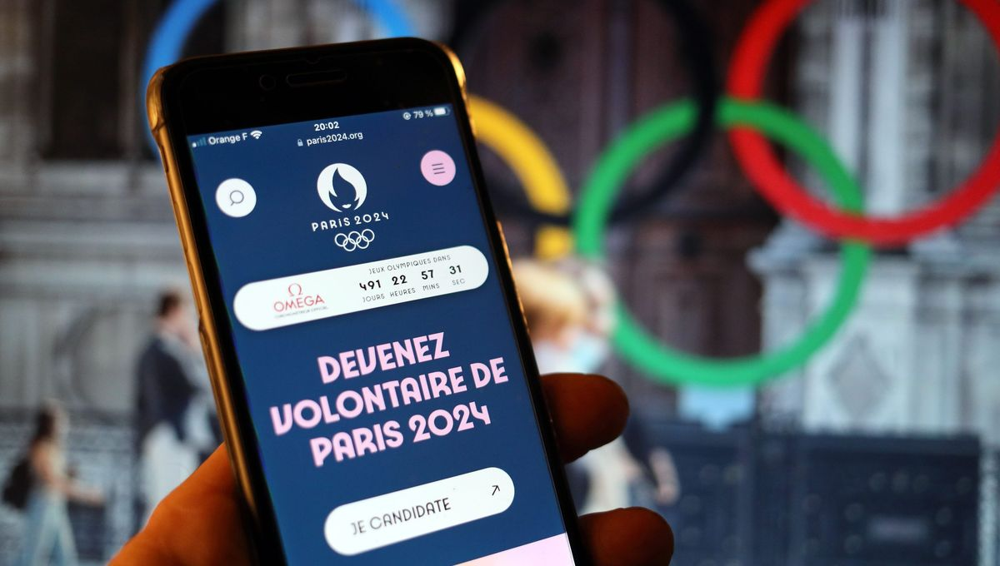

Courrier Olympique

Les Jeux Olympiques de Paris 2024 s'annoncent comme un spectacle sportif mondial exceptionnel, mais ils vont bien au-delà en célébrant la jeunesse et le bénévolat. Alors que les athlètes se préparent à briller à l'échelle internationale, une armée de jeunes bénévoles se mobilise pour faire de cet événement une expérience mémorable pour tous.
Dans une interview captivante, Sara, originaire d’une banlieue dynamique de Paris, partage son parcours, évoquant ses motivations profondes pour devenir bénévole aux Jeux Olympiques. "Le sport a toujours été une source d'inspiration pour moi, et pouvoir contribuer à l'un des plus grands événements sportifs mondiaux est une opportunité extraordinaire", explique-t-elle avec enthousiasme.
Sara, étudiante en classe de Terminale, s'est impliquée dans le programme: "Génération 2024", dès son lancement. Elle raconte avec passion comment cette expérience lui a ouvert de nouvelles perspectives sur la puissance du bénévolat et son impact potentiel sur la communauté. "Être au cœur de l'action, contribuer à l'organisation des Jeux, c'est bien plus qu'une simple opportunité, c'est une chance de laisser une marque positive dans l'histoire du sport."
Son parcours, bien qu'empreint de détermination, n'a pas été sans défis. Sara partage comment elle a surmonté les obstacles, jonglant entre ses responsabilités académiques et son engagement bénévole. "Cela demande du temps et de l'effort, mais quand on voit l'impact positif que cela peut avoir, cela en vaut vraiment la peine."
En tant que bénévole aux Jeux Olympiques, Sara s'attend à vivre des moments inoubliables. "C'est une expérience unique qui va bien au-delà du simple fait d'assister aux compétitions. C'est une immersion totale dans l'atmosphère électrique des Jeux, et je suis impatiente de contribuer à créer des souvenirs inoubliables pour les athlètes et les spectateurs."

Sara souligne également l'importance des projets bénévoles innovants de Paris 2024, notamment le programme: "Bénévoles Éco-responsables". "Cela montre que notre engagement va au-delà de l'événement lui-même. Nous sommes acteurs du changement, en contribuant à rendre les Jeux plus durables et respectueux de l'environnement."
En conclusion, grâce à l'énergie débordante de la jeunesse et à l'engagement passionné des bénévoles tel que Sara, les Jeux Olympiques de Paris 2024 resteront gravés dans les mémoires comme une célébration de l'unité, de la diversité et du pouvoir transformateur du sport.

DEBUNKAGE
Parce qu'il s'agit d'une interview, l’article n’explique rien de précis et ne se repose pas sur des exemples concrets concernant l’engagement de Sara. L’article n’informe pas le lecteur sur la réelle place donnée aux jeunes et aux bénévoles dans l’organisation des Jeux Olympiques.